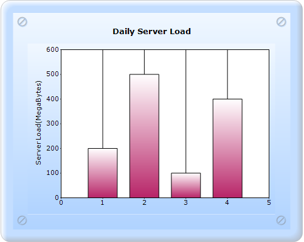
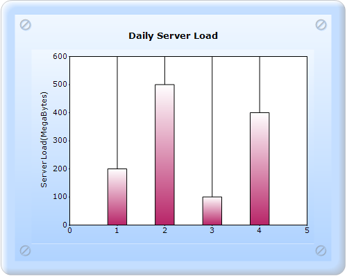
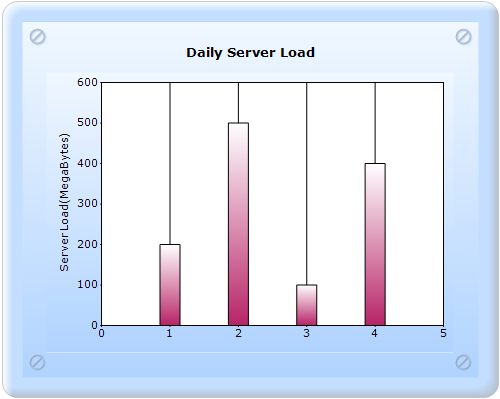

ColumnWidthMode specifies the width drawing mode for the columns in a Column chart.
|
Details | |
|
Possible values |
DefaultWidthMode - The width of the columns will always be calculated to fill the space between columns. FixedWidthMode - The width should be given in Series.Points[i].YValues[1], in pixels. If the width of the columns are not given in point YValues[1], then they are calculated to fill the space between columns. RelativeWidthMode - Similar to the FixedWidthMode, the width is specified in YValues[1] but in units of X-axis range. |
|
Default value |
DefaultWidthMode |
|
2D/3D limitations |
No |
|
Application to chart element |
All series |
|
Application to chart types |
Column charts, Box and Whisker chart, and Candle chart. |
The following is the DefaultWidthMode chart image:

Figure 189: Chart with default ColumnWidthMode
ColumnFixedWidth specifies the width of each column when ColumnWidthMode is set to FixedWidthMode.
|
Details | |
|
Possible values |
An integer value. |
|
Default value |
20 |
|
2D/3D limitations |
None |
|
Application to chart element |
All series |
|
Application to chart types |
Column charts, Box and Whisker chart, and Candle chart. |
Chart with the ColumnWidthMode and ColumnFixedWidth properties can be created through two ways:
· Builder
· ChartModel
5.2.1.3.1.3.1 Builder
The steps to create a chart with the ColumnWidthMode and ColumnFixedWidth properties through Builder are as follows:
1. In Controller, return view to the Aspx page.
[C#]
public ActionResult SimpleChart()
{
return View();
}
2. In View, invoke the ChartBuilder with the control ID as the first argument.
3. Create the Series and Points, and set the style for the chart.
4. Set the ColumnWidthMode to RelativeWidthMode.
View [ASPX]
<%= Html.Chart("SimpleChart").Series(series =>
{
series.Add().Type(Syncfusion.Windows.Forms.Chart.ChartSeriesType.Column)
.Text("Server 1")
.Points(point =>
{
point.Add(1, new double[] { 200, 0.4 });
point.Add(2, new double[] { 500, 0.4 });
point.Add(3, new double[] { 100, 0.4 });
point.Add(4, new double[] { 400, 0.4 });
});
})
// ------------- Set all styling properties to ChartModel----- .ColumnWidthMode(Syncfusion.Windows.Forms.Chart.ChartColumnWidthMode.RelativeWidthMode)
%>
View [cshtml]
@{ Html.Chart("SimpleChart").Series(series =>
{
series.Add().Type(Syncfusion.Windows.Forms.Chart.ChartSeriesType.Column)
.Text("Server 1")
.Points(point =>
{
point.Add(1, new double[] { 200, 0.4 });
point.Add(2, new double[] { 500, 0.4 });
point.Add(3, new double[] { 100, 0.4 });
point.Add(4, new double[] { 400, 0.4 });
});
})
// ------------- Set all styling properties to ChartModel----- .ColumnWidthMode(Syncfusion.Windows.Forms.Chart.ChartColumnWidthMode.RelativeWidthMode).Render();
}
5.2.1.3.1.3.2 ChartModel
To create a chart with the ColumnWidthMode and ColumnFixedWidth properties through ChartModel:
1. In Controller, create an instance for MVCChartModel.
2. Create an instance for ChartSeries, add the Points, set any style, and add the Series to the ChartModel.
3. Set the style for the chart.
4. Set the ColumnWidthMode to RelativeWidthMode.
5. Return the view by setting the ChartModel in the ViewData.
|
[C#] public ActionResult SimpleChart() { MVCChartModel chartModel = new MVCChartModel(); // Create chart series and add data points to it.
ChartSeries series1 = new ChartSeries("Server1", ChartSeriesType.Column);
series1.Points.Add(1, 200, 0.4);
series1.Points.Add(2, 500, 0.4);
series1.Points.Add(3, 100, 0.4);
series1.Points.Add(4, 400, 0.4);
// Add the series to the chart series collection.
chartModel.Series.Add(series1);
chartModel.ColumnWidthMode = ChartColumnWidthMode.RelativeWidthMode;
// ------------- Set all styling properties to ChartModel----- ViewData.Model = chartModel; return View(); }
|
6. Invoke the ChartBuilder by using the control ID as the first argument, and convert the passed ViewData to MVCChartModel and pass it as the second argument.
|
View [ASPX] <%= Html.Chart("SimpleChart",(MVCChartModel)ViewData.Model) %>
|
|
View [cshtml] @(new HtmlString(Html.Chart("SimpleChart",(MVCChartModel)ViewData.Model).ToString()))
|
7. Build and run the application. You will get the following output, now the column width is YValues[1] in every chart point.

Figure 190: Column Width mode as RelativeWidthMode
5.2.1.3.1.4.1 Builder
To create a chart with the ColumnWidthMode and ColumnFixedWidth properties through Builder:
1. In Controller, return View to the Aspx page.
|
[C#] public ActionResult SimpleChart() { return View(); }
|
2. In View, invoke the ChartBuilder with the control ID as the first argument.
3. Create the Series and Points, and set the style for the chart.
4. Set the ColumnWidthMode to FixedWidthMode, and set the Column Fixed width in the integer format.
|
View [ASPX] <%= Html.Chart("SimpleChart").Series(series => { series.Add().Type(Syncfusion.Windows.Forms.Chart.ChartSeriesType.Column) .Text("Server 1") .Points(point => { point.Add(1, new double[] { 200 }); point.Add(2, new double[] { 500 }); point.Add(3, new double[] { 100 }); point.Add(4, new double[] { 400 }); }); }) // ------------- Set all styling properties to ChartModel----- .ColumnWidthMode(Syncfusion.Windows.Forms.Chart.ChartColumnWidthMode.FixedWidthMode) .ColumnFixedWidth(30) %> |
|
View [cshtml] @{ Html.Chart("SimpleChart").Series(series => { series.Add().Type(Syncfusion.Windows.Forms.Chart.ChartSeriesType.Column) .Text("Server 1") .Points(point => { point.Add(1, new double[] { 200 }); point.Add(2, new double[] { 500 }); point.Add(3, new double[] { 100 }); point.Add(4, new double[] { 400 }); }); }) // ------------- Set all styling properties to ChartModel----- .ColumnWidthMode(Syncfusion.Windows.Forms.Chart.ChartColumnWidthMode.FixedWidthMode) .ColumnFixedWidth(30).Render(); } |
5.2.1.3.1.4.2 ChartModel
To create a chart with the ColumnWidthMode and ColumnFixedWidth properties through ChartModel:
1. In Controller, create an instance for MVCChartModel.
2. Create an instance for ChartSeries, add the Points, set the style, and add the Series to the ChartModel.
3. Set the style for the chart.
4. Set the ColumnWidthMode to FixedWidthMode, and set the ColumnFixedWidth.
5. Return the view by setting the ChartModel in the ViewData.
|
[C#] public ActionResult SimpleChart() { MVCChartModel chartModel = new MVCChartModel(); // Create chart series and add data points to it.
ChartSeries series1 = new ChartSeries("Server1", ChartSeriesType.Column);
series1.Points.Add(1, 200);
series1.Points.Add(2, 500);
series1.Points.Add(3, 100);
series1.Points.Add(4, 400);
// Add the series to the chart series collection.
chartModel.Series.Add(series1);
chartModel.ColumnWidthMode = ChartColumnWidthMode.RelativeWidthMode; chartModel.ColumnFixedWidth = 30;
// ------------- Set all styling properties to ChartModel----- ViewData.Model = chartModel; return View(); } |
6. Invoke the ChartBuilder by using the control ID as the first argument, and convert the passed ViewData to MVCChartModel and pass it as the second argument.
|
View [ASPX]
<%= Html.Chart("SimpleChart",(MVCChartModel)ViewData.Model) %>
|
|
View [cshtml] @(new HtmlString(Html.Chart("SimpleChart",(MVCChartModel)ViewData.Model).ToString()))
|
7. Build and run the application. You will get the following output, now the column width is always the ColumnFixedWidth value.

Figure 191: ColumnWidthMode as ColumnFixedWidthMode and ColumnFixedWidth as 30
See Also
Column charts, BoxAndWhiskerChart, Candle Chart, ColumnFixedWidth